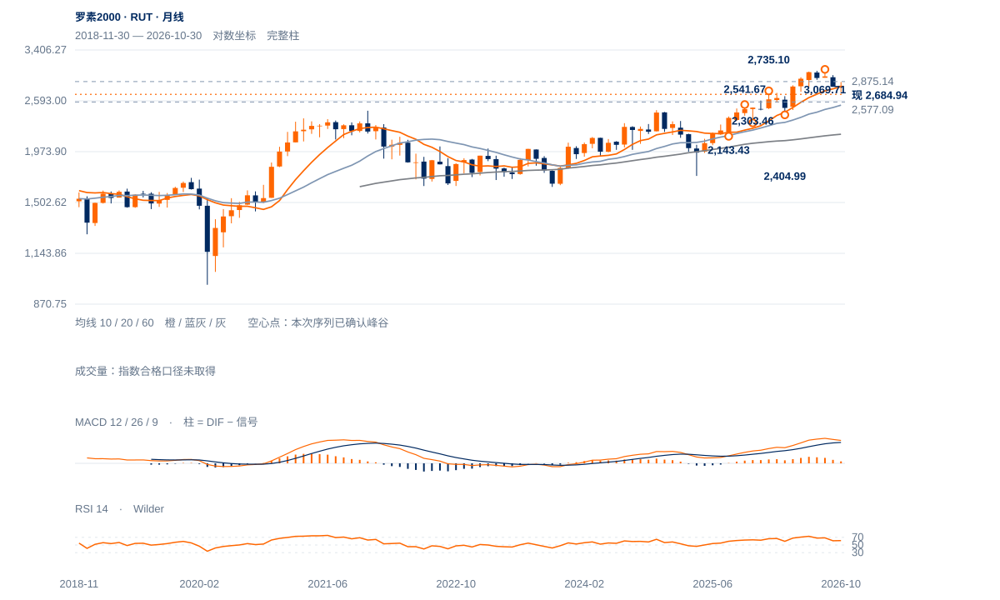

近期偏反弹延续至2716—2721检验，较高日低提供准备，尚未形成确认周谷。
罗素2000 · 2026-11-24完整收盘
小盘连续推进，距离2721还差哪一步？
2,684.94+0.57%
较高日低与距旧谷的空间
分期限展望
未来2—6周继续偏2716—2721旧谷检验，较高日低及相对强势提供准备。若收住原谷并回试保持，失败下破解释增强；若再失2655，日内防守证据应降低，2811—2832仍为上层供应。
未来1—3个月保留2534较长均衡上方修复与长期大谷抬升背景，3069大高后的下降尚未结束。原双谷失败后新周谷及2721恢复应分别确认，2875中峰恢复之前，不把相对强势等同完整大底。

长期背景
长期低点自2022至2026抬升，8月3069高后进入中级调整。2534较长均衡尚守，2716—2721旧谷仍在上，24日继续日级推进只是恢复准备，尚未完成跨周期底部。 当前日收盘2,684.94与完整10月月线分开观察；11月尚未结束。
中期结构与新证据
完整周线已更新至11月20日：2026-08-14高3,069.71（2026-08-28确认）；2026-10-16低2,716.23（2026-10-30确认）；2026-11-04高2,875.14（2026-11-20确认）。最新一周与上次11月20日背景分别保存；24日国内与23日美股仅为本周进行中观察。24日收2684.94涨0.57%，低2655.32高于23日2631.59，高2695.24仍未到2716—2721。收盘距2721约36点、0.68倍ATR53.06；近20日相对纳综领先6.26%，绝对底型确认仍缺旧谷保持。
确认与失效
2716—2721日收保持先行，再看2811—2832及2875.14。
2655.32再失削弱短推进，2577.09为20日极值；原双谷候选失败仍登记。
主要反方
若旧谷再次拒绝并失2655，连续推进质量下降；迅速恢复2721则会增强失败下破解释。
波动与量能
RSI14 42.89；ATR14 53.06；相对量未取得合格口径